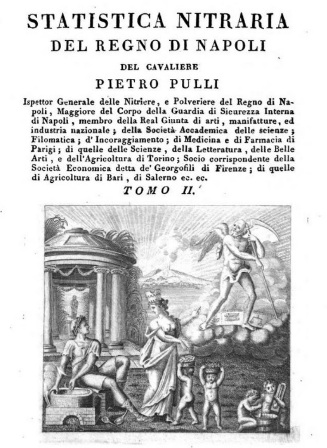
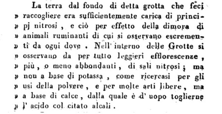

SCENA II - Al Caffè Pedrocchi di Padova

A Padova intanto l'esimio Conte Carburi, naturalmente a conoscenza come tutto il mondo scientifico nazionale della faccenda di Molfetta, nutre qualche dubbio: ma quello del Pulo deve considerarsi un luogo come tanti altri (anche se indubbiamente più grande e ricco) dove il nitro generato da esalazioni organiche azotate si trova depositato su delle superfici calcaree o deve veramente considerarsi come una miniera a tutti gli effetti?
Trova il coraggio e l'ardire di chiedere un parere nientemeno che a Lavoisier, il quale risponde che da parte sua è convinto che anche in quel sito, come in tutti quelli nei quali si nota la presenza del nitro, la presenza stessa sia dovuta ad una azione superficiale dell'aria su materie organiche e vegetali.
Insomma, niente miniera di KNO3 nemmeno per il più illustre chimico francese e il Conte trova in pratica confermato quello che già suppone.
Il 15 luglio 1789 (il giorno dopo della presa della Bastiglia. A proposito, caro Lavoisier: dovresti cominciare a pensare più al tuo collo che alla chimica...) il Carburi e l'Abate Fortis si trovano al Caffè Pedrocchi di Padova in erudita conversazione e per farla breve cominciano a bisticciare; uno (il Fortis) continua a sostenere che a Molfetta lui ha trovato una vera e propria "miniera" di nitro, l'altro (il Carburi) ammette senz'altro che il nitro c'è ma che le miniere di nitro (KNO3, insisto) non esistono.
Ognuno è sicuro di aver ragione e difende caparbiamente le proprie convinzioni, finche l'Abate non ne può più, si spazientisce e lancia la sfida:
-Scommetto cinquanta zecchini! Wallerio (un autorevole naturalista svedese, Johan Wallerius) e l'Accademia Reale delle Scienze mi daranno ragione: a Molfetta si tratta di nitro di miniera"-
SCENA III - Al Pulo di Molfetta
Il materiale nitroso del Pulo viene inviato per essere analizzato sia a Napoli che al famosissimo chimico Martin Heinrich Klaproth (lo scopritore dell'uranio e dello zirconio): tutti i responsi sono però sfavorevoli al Fortis, che è sempre più depresso, si lamenta anche con l'amico Lazzaro Spallanzani e si sente quasi vittiMa di una congiura.
(Caro Abate, mi vien da dire, se la "miniera" è fallimentare e butta solo una miseria di nitro...fattene una ragione!)
Molti anni dopo nel 1808 (e nel Pulo le pecore avevano ripreso a pascolare) finalmente parte da Napoli l'Ispettore Generale delle Nitriere il Cav. Pietro Pulli per la Puglia Puecezia (la terra di Bari), con l'intenzione di chiarire e riferire una volta per tutte cosa ci sia in quel gran buco.
Scende e visita accuratamente le grotte Ferdinando e Carolina ed in sostanza ecco le sue parole:


Trova che tutto attorno al Pulo e nel fondo vi sono tracce inequivocabili di coltivazioni agricole e allevamenti animali (pecore) che probabilmente datano dalla notte dei tempi e che tutto ciò giustifica, viste le condizioni geomorfologiche della cavità, la presenza di materiale nitroso.
Pur tuttavia conferma che la presenza è scarsa sia di quello buono (di potassio) e ormai anche di quello cattivo (di calcio).
Aggiunge che il credere che la sostanza sia di origine fossile "non è da ammettersi" e che in pratica è inutile cercare una "miniera" che non esiste.
Visita per bene anche le installazioni fatte costruire dal Fortis: fornaci, caldaie, tettoie, vasche, ormai quasi tutto abbandonato e diroccato.
Trova anche che il pozzo da quale si attingeva l'acqua per le operazioni di lisciviazione dimostra di fornire acqua ricca di "muriato di soda e di magnesia", quindi addirittura salmastra!
Il Cav. Pulli si permette in conclusione di dare uno spassionato consiglio al Governo francese di Napoli: perchè non sfruttare il suolo del Pulo per coltivare olivi, vendere l'olio e utilizzare il capitale per costruire una vera nitriera?
Consiglio davvero pregevole, soprattutto per la (poco) velata ironia.
E questa fu la pietra tombale sulla miniera di salnitro del povero Abate Fortis.
Dico povero perchè aveva dovuto pagare i cinquanta zecchini al Conte Caluri?
Purtroppo questo fondamentale dilemma, sul quale si basa tutta la commediola, è destinato a rimanere insoluto.
Non ho idea se la scommessa sia stata onorata (ma credo di no).